Highlight - Buddha's Birthday Monday 5th of May
Insadong - So many people at the temple and street. The crepe and tea was nice though.
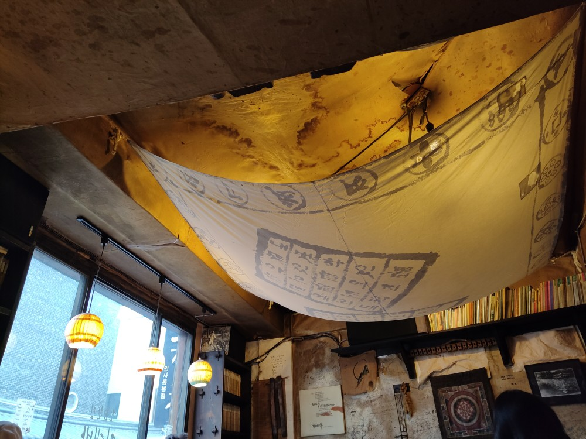 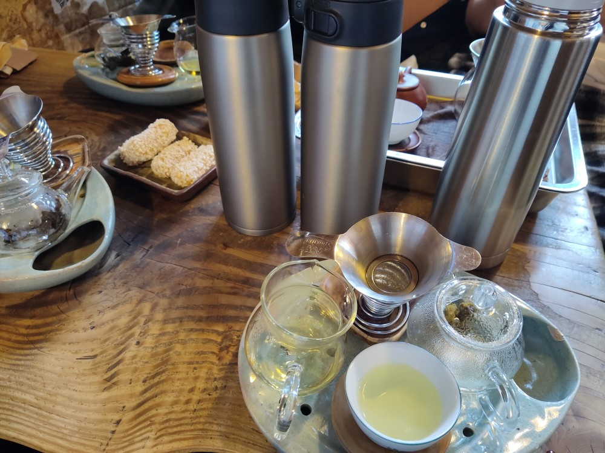 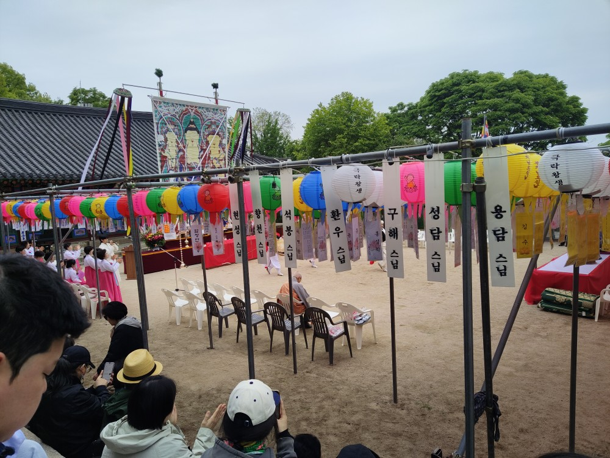 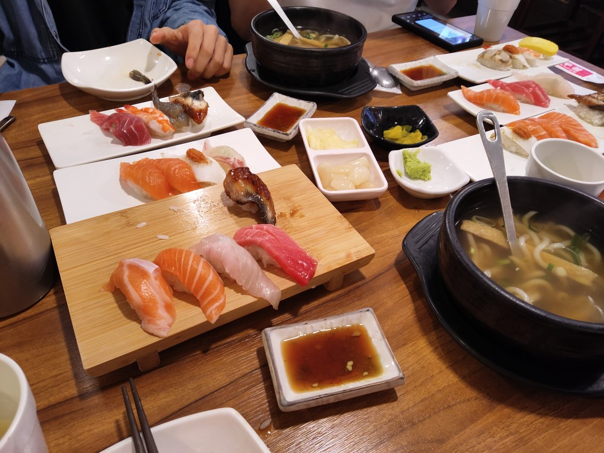 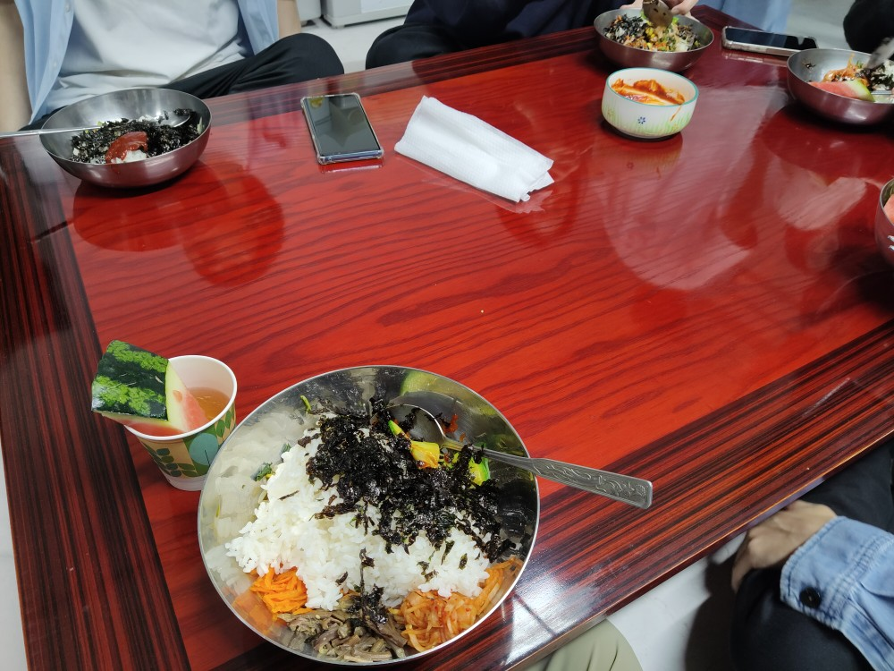Freebies from temples. Finally experienced that temple meal bibimbap.
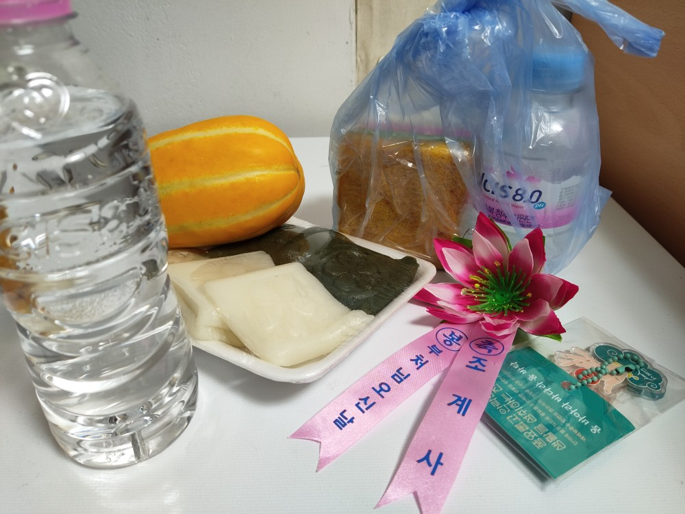 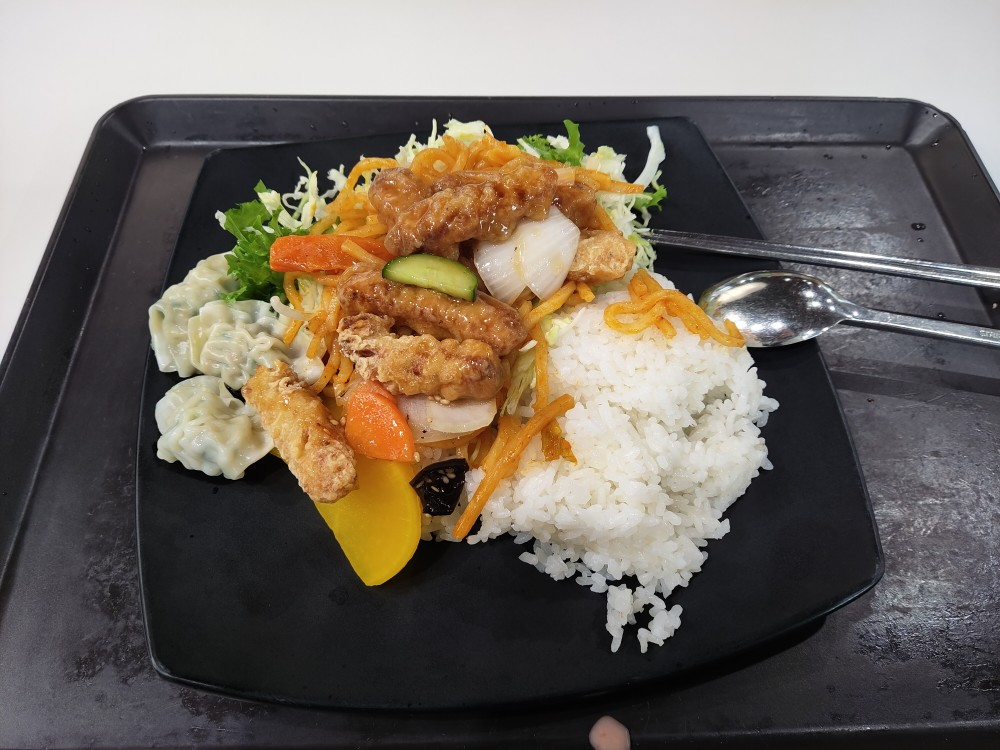I didn't know Yonsei had a buffet section! A local student friend showed to me that it's at the Student Union building.
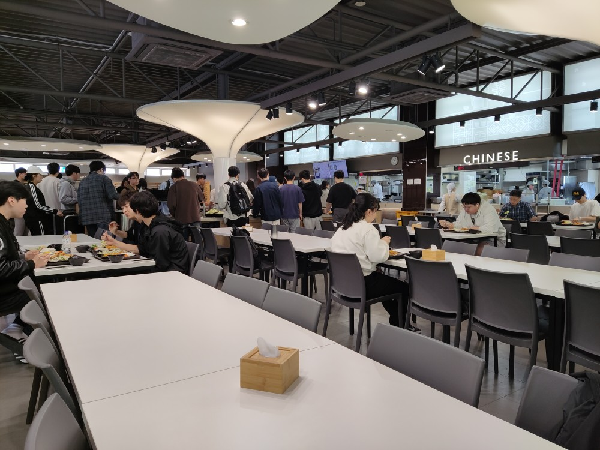 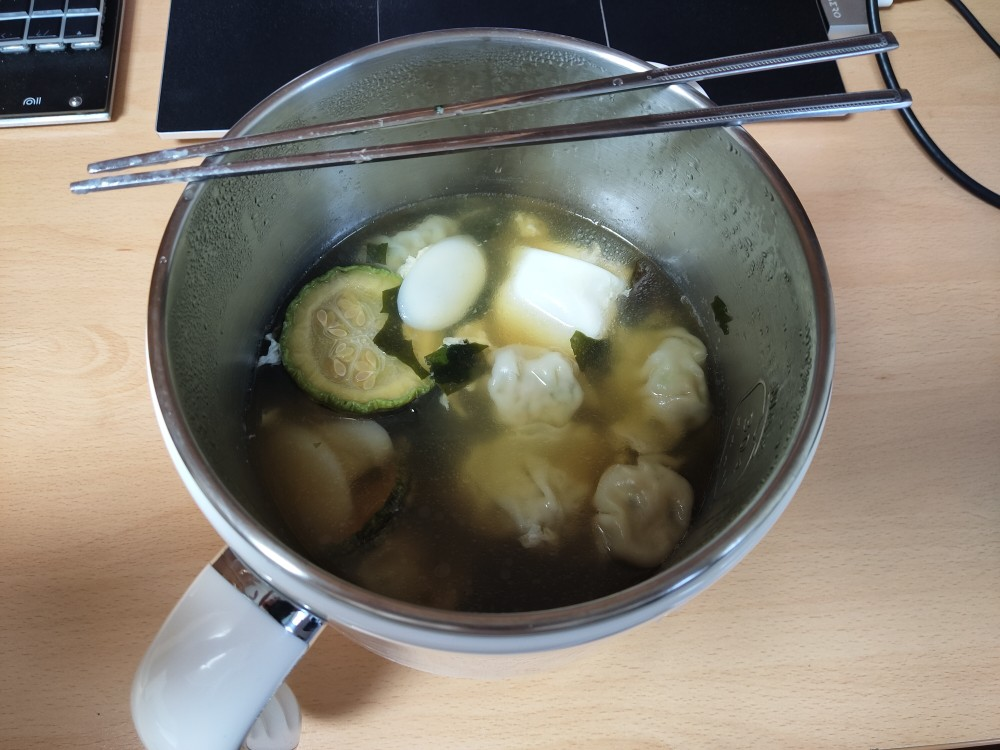 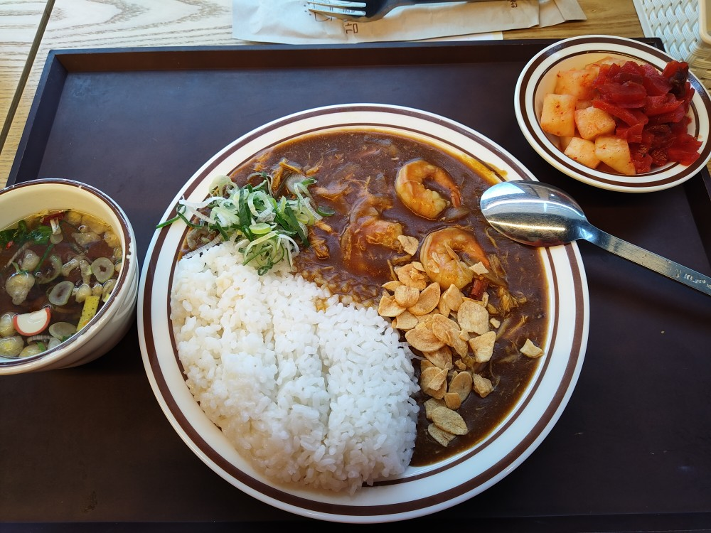 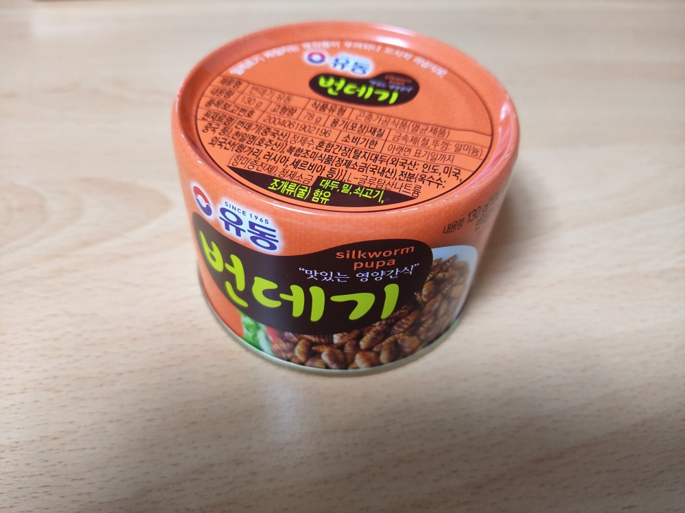 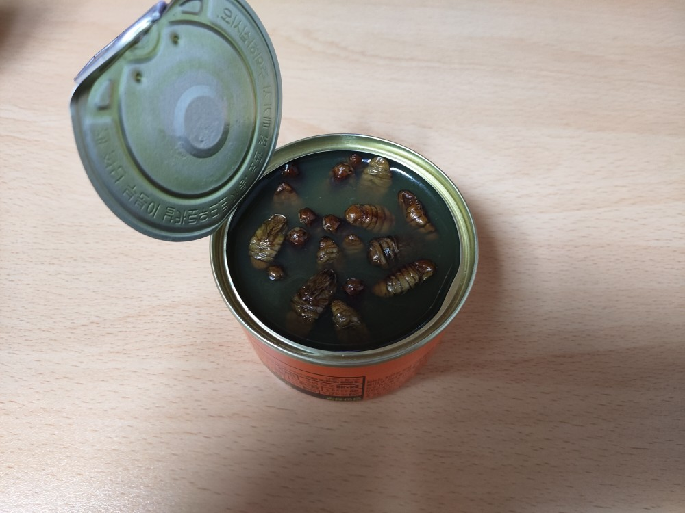Had it with my usual weekend noodle meal. I like the initial crunch, but the latter mushy and mid うに taste is not to my liking, though I can imagine why people like to eat and drink with soju. Hopefully the street vendor ones would be nicer.